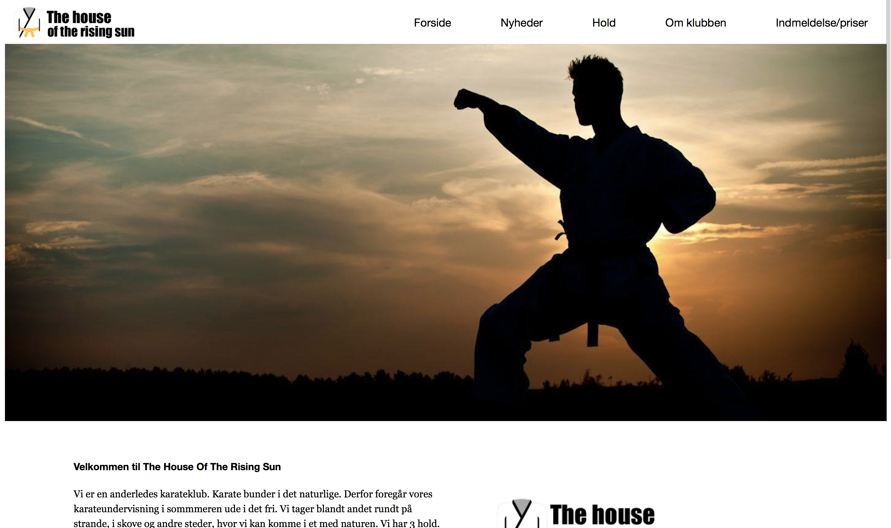
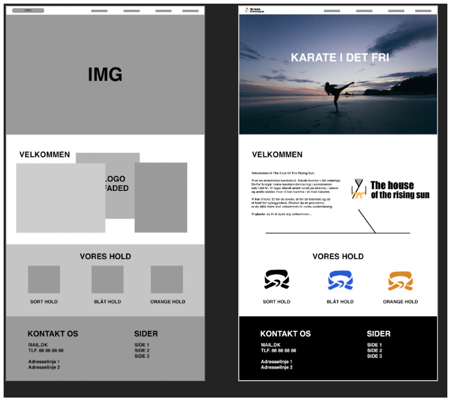

KARATEPROJEKT
THE HOUSE OF THE RISING SUN
Projekt nummer 2 på Multimediedesigner-uddannelsen
Hvad gik opgaven ud på?
I dette projekt skulle vi lave et digitalt produkt til et særligt brugersegment. Det skulle vi gøre for en fiktiv sportsforening. Vi beskæftigede os med sportsgrenen karate.
Det var i dette temaprojekt, hvor vi første gang skulle arbejde med kvalitative interviews samt lave personaer. Ud over det skulle vi også lave en hjemmeside kodet i HTML & CSS.
Sidst i projektet skulle vi gøre klar til at kunne overlevere projektet til en anden gruppe, der skulle videreudvikle det.
Vores løsning & tankerne bag
Vi valgte at lave en lidt anderledes karateklub, der hed "The House Of The Rising Sun". I karateklubben skulle folk dyrke karate i det fri for at komme tilbage til naturen, som man gjorde det i den traditionelle karate.
Tankerne bag websitet var at udvikle en moderne løsning, hvor klubmedlemmerne kunne finde alle de nødvendige oplysninger som hold, træningstider, kontaktinfo og så videre.
Forsiden på vores løsning endte med at se sådan ud:
Hvad var min rolle i projektet?
I dette projekt havde vi på studiet for første gang fokus på at have en projektleder. Det var en rolle, som jeg påtog mig for at udfordre mig selv og udvikle mig som leder. Undervejs i projektet holdt vi et projektledermøde, hvor vi fik evalueret, hvordan det havde været.
Jeg synes generelt, at det gik fint i min gruppe, og der var en ganske fin fordeling af opgaverne. Jeg arbejdede en del med kodning, da det var meget begrænset, hvad de andre i gruppen havde af kompetencer på dette område. Vi skulle i projektet kode en side hver, og her kodede jeg min egen side, ligesom jeg også hjalp nogle af de andre gruppemedlemmer, hvis de havde problemer. Jed kodede forsiden, som der også er et link til og billede af ovenfor.
Jeg udarbejdede også mockups og wireframes i Photoshop. Mere om det nedenfor.
Hvad lavede jeg?
Jeg kodede blandt andet forsiden på hjemmesiden, ligesom jeg også lavede wireframes og mockups af hjemmesiden.
Wireframe & Mockups i Photoshop
Dette var det første projekt, hvor vi for alvor stiftede bekendtskab med wireframes og mockups. Wireframet er lavet i gråtoner og laves tidligt i designfasen. Mockupet kommet på længere henne, når man er blevet enig om et design. Både wireframe og mockups er lavet i Photoshop.
Kodning af underside (HTML & CSS)
Som en del af projektet, skulle vi i gruppen kode en undersside hver i HTML og CSS. Her lavede jeg forsiden. Forsiden er lavet simpelt og tankerne bag er, at det skal være en nem indgang til det videre indhold på siden. Forsiden skal give en indtroduktion til klubben, så man får lyst til at læse videre.
Her kan du se forsiden, som jeg lavede:
Hvilke erfaringer gjorde jeg mig?
I dette projekt blev jeg markant bedre til kodning, fordi at der ikke rigtigt var nogle i gruppen, der havde prøvet det før. Derfor tog jeg som projektlederne hatten på. Samtidig var det første projekt, hvor hvert gruppemedlem skulle kode en hjemmeside hver. Jeg hjalp til hos de andre, og her lærte jeg virkelig noget!
I og med at jeg var projektleder, lærte jeg også en hel del om at fordele arbejdet og lave en plan for arbejdet. Her brugte vi projektstyringsværktøjet Trello til at styre vores opgaver.
Selvom jeg i første projekt arbejde med mockups, så rykkede jeg mig markant mere i denne disciplin i dette projekt. Vi havde nemlig fået undervisning i det og lært nogle gode teknikker, som jeg kan kunne bruge i arbejdet.
Alt i alt et projekt, hvor jeg fik lært en hel masse!